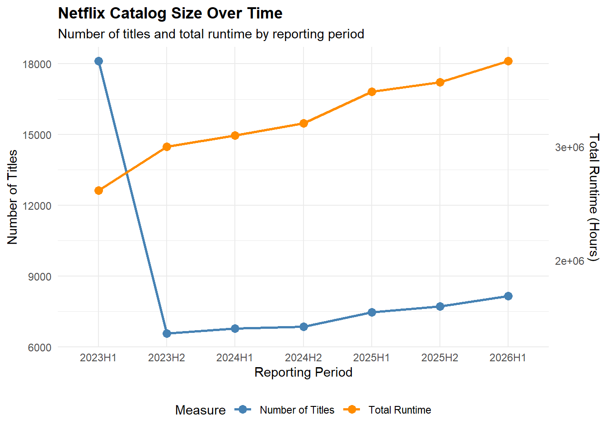
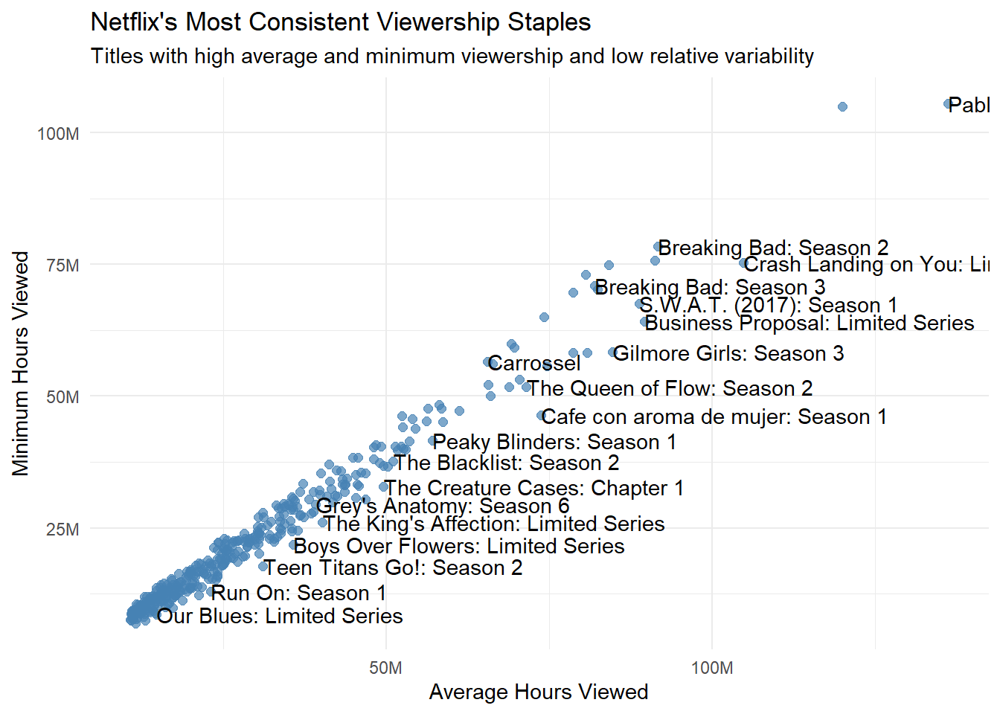

Mini-Project 01 - What We Watched: Exploring Netflix Viewing Data
Author
LuisDFlores
Introduction
Netflix is always looking to gain an advantage in the streaming wars. Although its corporate strategy is not public, we can make analyze their performance metrics and make inferences on to why based on its public information available. Netflix has published a “What We Watched” data set every six months since the beginning of 2023. Exploratory data analysis will be performed on the combined data sets.Mismatched variables will be properly prepared to match data types and cleaned to filter missing values.The purpose of this project is to identify which Netflix titles are most popular among viewers based on the reliable parameters identified. Summarizing results and identifying potential issues along the way. I will practice and build a more optimize data pipeline for future analysis and projects.
Data Acquisition and Preparation
load_netflix_data is a function that prepares the data and combines it into a single data set. Removes missing values, cleans title names and identifies events. All of information is organized in netflix_data.
Dates and release dates are formatted as date variables, run time and hours viewed as numeric variables, and live_event as a logical variable. However, year is currently stored as a character variable, and global availability is also stored as text. These variables may need to be converted to more appropriate types before analysis. View count records are missing and will need to be addressed before attempting to determine popularity rankings.
Code
summary(netflix_data)
year period period_start period_end
Length :61892 Length :61892 Min. :2023-01-01 Min. :2023-06-30
N.unique : 4 N.unique : 7 1st Qu.:2023-01-01 1st Qu.:2023-06-30
N.blank : 0 N.blank : 0 Median :2024-01-01 Median :2024-06-30
Min.nchar: 4 Min.nchar: 6 Mean :2024-04-12 Mean :2024-10-10
Max.nchar: 4 Max.nchar: 6 3rd Qu.:2025-07-01 3rd Qu.:2025-12-31
Max. :2026-01-01 Max. :2026-06-30
Title Runtime Views Hours Viewed
Length :61892 Min. : 2.0 Min. : 100000 Min. : 100000
N.unique :24427 1st Qu.: 210.0 1st Qu.: 100000 1st Qu.: 500000
N.blank : 0 Median : 320.0 Median : 400000 Median : 1800000
Min.nchar: 1 Mean : 467.3 Mean : 1375241 Mean : 8265858
Max.nchar: 217 3rd Qu.: 545.0 3rd Qu.: 1200000 3rd Qu.: 6400000
Max. :23853.0 Max. :144800000 Max. :964100000
NAs :13085 NAs :18198
Release Date Available Globally? live_event
Min. :2010-04-01 Length :61892 Mode :logical
1st Qu.:2019-05-31 N.unique : 2 FALSE:61582
Median :2021-06-17 N.blank : 0 TRUE :310
Mean :2021-03-25 Min.nchar: 2
3rd Qu.:2023-02-14 Max.nchar: 3
Max. :2026-06-29 NAs : 2
NAs :35251
Renamed inconsistent variable names and converted year and available_globally to appropriate data types so R can recognize them as intended.
Verifying the variable name and type changes while beginning to explore the data set by randomly selecting 10 rows. Availability globally might have an impact on views as more consumers can view the content. Views and hours_viewed are the parameters I want to focus on to determine what shows are more popular. Can potentially filter out all non available globally to see how much the numbers change, or even see if there’s any change.
Code
netflix_data |>slice_sample(n =10)
# A tibble: 10 × 11
year period period_start period_end title Runtime Views hours_viewed
<int> <chr> <date> <date> <chr> <dbl> <dbl> <dbl>
1 2023 2023H1 2023-01-01 2023-06-30 Charmed (2… 902 NA 4500000
2 2025 2025H2 2025-07-01 2025-12-31 Tiny Prett… 567 500000 4800000
3 2024 2024H2 2024-07-01 2024-12-31 The Hughle… 445 200000 1800000
4 2023 2023H1 2023-01-01 2023-06-30 Wait, My Y… 871 NA 1400000
5 2024 2024H2 2024-07-01 2024-12-31 Blood & Wa… 280 900000 4000000
6 2025 2025H1 2025-01-01 2025-06-30 Pop the Ba… 50 1200000 1000000
7 2024 2024H2 2024-07-01 2024-12-31 My Lovey I… 300 100000 500000
8 2025 2025H2 2025-07-01 2025-12-31 Nurse Jack… 335 2500000 14000000
9 2023 2023H1 2023-01-01 2023-06-30 Princes Of… NA NA 200000
10 2023 2023H1 2023-01-01 2023-06-30 SpongeBob … NA NA 4200000
# ℹ 3 more variables: release_date <date>, available_globally <lgl>,
# live_event <lgl>
The completion rates show that year and hours_viewed have no missing values. This makes it reliable.Run time is about 78.9% complete and Views is about 70.6% complete. This means that a significant portion of the data is missing.
Code
library(skimr)skim(netflix_data)
Data summary
Name
netflix_data
Number of rows
61892
Number of columns
11
_______________________
Column type frequency:
character
2
Date
3
logical
2
numeric
4
________________________
Group variables
None
Variable type: character
skim_variable
n_missing
complete_rate
min
max
empty
n_unique
whitespace
period
0
1
6
6
0
7
0
title
0
1
1
217
0
24427
0
Variable type: Date
skim_variable
n_missing
complete_rate
min
max
median
n_unique
period_start
0
1.00
2023-01-01
2026-01-01
2024-01-01
7
period_end
0
1.00
2023-06-30
2026-06-30
2024-06-30
7
release_date
35251
0.43
2010-04-01
2026-06-29
2021-06-17
2487
Variable type: logical
skim_variable
n_missing
complete_rate
mean
count
available_globally
2
1
0.35
FAL: 40171, TRU: 21719
live_event
0
1
0.01
FAL: 61582, TRU: 310
Variable type: numeric
skim_variable
n_missing
complete_rate
mean
sd
p0
p25
p50
p75
p100
hist
year
0
1.00
2024.11
1.08
2023
2023
2024
2025
2026
▇▅▁▅▂
Runtime
13085
0.79
467.35
694.71
2
210
320
545
23853
▇▁▁▁▁
Views
18198
0.71
1375241.45
3630933.22
100000
100000
400000
1200000
144800000
▇▁▁▁▁
hours_viewed
0
1.00
8265858.27
24924226.03
100000
500000
1800000
6400000
964100000
▇▁▁▁▁
Formatting data to be digested easily.
Code
library(gt)netflix_data |>#Removing other shows category, it appeared on top 10 list and didnt make sense to include it.filter(title !="Other Shows") |>group_by(title) |>summarize(reporting_records =n(),#removing unavailable datatotal_hours_viewed =sum(hours_viewed, na.rm =TRUE),average_hours_viewed =mean(hours_viewed, na.rm =TRUE),.groups ="drop" ) |>#descending orderarrange(desc(total_hours_viewed)) |>slice_head(n =10) |>gt() |>cols_move_to_end(reporting_records) |>cols_label(title =md("**Title**"),total_hours_viewed =md("**Total Hours Viewed**"),average_hours_viewed =md("**Average Hours Viewed**"),reporting_records =md("*Number of Reports*") ) |>tab_header(title ="Netflix's Most Popular Titles",subtitle ="Top 10 titles ranked by total hours viewed" ) |>tab_source_note(md("Source: Netflix engagement reports, 2023–2026.") ) |>fmt_number(columns =c(total_hours_viewed, average_hours_viewed),decimals =0,use_seps =TRUE )
# A tibble: 8 × 1
title
<chr>
1 Stranger Things 4
2 Stranger Things
3 Stranger Things 2
4 Stranger Things 3
5 Beyond Stranger Things: Beyond 2
6 Stranger Things 5
7 Stranger Things: Fireplace
8 Stranger Things: Tales From '85: Season 1
Netflix’s catalog is 35.09% globally available by title and 52.07% globally available by hours viewed.
Exploratory Questions - Table Answers
What was the top title (by total hours viewed) in each period and what fraction of total viewership did it capture?
Finding total hours viewed by summing each period, then taking individual titles and dividing them to find viewership share.
Code
top_titles <- netflix_data |>group_by(period) |># total hours viewed across all titles in each periodmutate(total_period_hours =sum(hours_viewed, na.rm =TRUE) ) |># total viewershipmutate(viewership_share = hours_viewed / total_period_hours ) |>arrange(period, desc(hours_viewed)) |># Keep only the top title from each periodslice_max(order_by = hours_viewed,n =1,with_ties =FALSE ) |># Keep the columns needed to answer the questionselect( period, title, hours_viewed, viewership_share ) |>ungroup()top_titles |>gt() |>tab_header(title ="Netflix's Most-Viewed Title",subtitle ="By Period" ) |># Rename columns for readabilitycols_label(period ="Period",title ="Top Title",hours_viewed ="Hours Viewed",viewership_share ="Viewership Percentage" ) |># Display viewing hours with commas and the share as a percentagefmt_number(columns = hours_viewed,decimals =0,use_seps =TRUE ) |>fmt_percent(columns = viewership_share,decimals =2 ) |># Align the text and numerical columnscols_align(align ="left",columns =c(period, title) ) |>cols_align(align ="right",columns =c(hours_viewed, viewership_share) ) |># Add a note explaining how the share was calculatedtab_source_note(source_note =" Viewership percentage = title's hours viewed / total hours viewed across all titles in the same period." )
Netflix's Most-Viewed Title
By Period
Period
Top Title
Hours Viewed
Viewership Percentage
2023H1
The Night Agent: Season 1
812,100,000
0.87%
2023H2
King the Land: Limited Series
630,200,000
0.97%
2024H1
Bridgerton: Season 3
733,800,000
1.08%
2024H2
Squid Game: Season 2
619,900,000
0.91%
2025H1
Squid Game: Season 2
840,300,000
1.18%
2025H2
Wednesday: Season 2
964,100,000
1.35%
2026H1
Bridgerton: Season 4
889,800,000
1.20%
Viewership percentage = title's hours viewed / total hours viewed across all titles in the same period.
How has Netflix’s catalog changed in size over the periods for which we have data? You should consider both the number of titles and the total runtime of content?
Code
catalog_summary <- netflix_data |>group_by(period) |>summarise(# distinct titles in each periodtotal_titles =n_distinct(title, na.rm =TRUE),# Keep one row per title before adding up the runtimetotal_runtime =sum( Runtime[!duplicated(title)],na.rm =TRUE ),.groups ="drop" ) |># Sort arrange(period)catalog_summary |>gt() |>tab_header(title ="Netflix Catalog Size change Over Time",subtitle ="Number of titles and runtime by reporting period" ) |>cols_label(period ="Reporting Period",total_titles ="Number of Titles",total_runtime ="Total Runtime" ) |>fmt_number(columns = total_titles,decimals =0,use_seps =TRUE ) |>fmt_number(columns = total_runtime,decimals =1,use_seps =TRUE ) |>cols_align(align ="left",columns = period ) |>cols_align(align ="right",columns =c(total_titles, total_runtime) ) |>tab_source_note(source_note =paste("Titles are uniquely counted per reporting period.","Runtime is summed once per distinct title.","Runtime located in database." ) )
Netflix Catalog Size change Over Time
Number of titles and runtime by reporting period
Reporting Period
Number of Titles
Total Runtime
2023H1
18,126
2,616,629.4
2023H2
6,574
3,000,055.0
2024H1
6,775
3,099,063.9
2024H2
6,854
3,206,606.2
2025H1
7,473
3,483,499.7
2025H2
7,712
3,564,177.8
2026H1
8,163
3,753,267.2
Titles are uniquely counted per reporting period. Runtime is summed once per distinct title. Runtime located in database.
Code
library(ggplot2)# Calculate a scaling factor to display both measures on one graphscale_factor <-max(catalog_summary$total_titles, na.rm =TRUE) /max(catalog_summary$total_runtime, na.rm =TRUE)# Plot title count and total runtime on the same graphggplot(catalog_summary, aes(x = period, group =1)) +geom_line(aes(y = total_titles, color ="Number of Titles"),linewidth =1 ) +geom_point(aes(y = total_titles, color ="Number of Titles"),size =3 ) +geom_line(aes(y = total_runtime * scale_factor,color ="Total Runtime" ),linewidth =1 ) +geom_point(aes(y = total_runtime * scale_factor,color ="Total Runtime" ),size =3 ) +scale_color_manual(name ="Measure",values =c("Number of Titles"="steelblue","Total Runtime"="darkorange" ) ) +scale_y_continuous(name ="Number of Titles",sec.axis =sec_axis(~ . / scale_factor,name ="Total Runtime (Hours)" ) ) +labs(title ="Netflix Catalog Size Over Time",subtitle ="Number of titles and total runtime by reporting period",x ="Reporting Period" ) +theme_minimal() +theme(legend.position ="bottom",plot.title =element_text(face ="bold") )

The number of titles significantly decreased from 2023H1 to 2023H2. After that change number of titles has increased at a smaller consistent rate. Run time has been consistently slowly increasing.
Which titles have had the most consistently high viewership across all periods? These shows are likely to be ‘staples’ that viewers fall back on as ‘comfort food’, e.g., re-runs of Friends.
Calculate the mean, minimum and standard deviation. To distinguish strong consisted viewership, rather than big spikes.
Filtering out shows with less than 6 periods. The more data, the less variability. The filter must apply to all three conditions, to keep high low audiences, with smaller changes in viewership.
# A tibble: 354 × 6
title n_periods avg_viewership min_viewership sd_viewership
<chr> <int> <dbl> <dbl> <dbl>
1 Pablo Escobar, el patr… 7 136214286. 105500000 22860842.
2 Chiquititas (2013) 7 120014286. 105000000 19421588.
3 Crash Landing on You: … 6 104750000 75300000 20253370.
4 Breaking Bad: Season 2 7 91614286. 78500000 11977399.
5 Sam & Cat: Season 1 7 91242857. 75700000 13755588.
6 Business Proposal: Lim… 6 89633333. 64200000 14902572.
7 S.W.A.T. (2017): Seaso… 7 88757143. 67600000 21199989.
8 Gilmore Girls: Season 3 7 84700000 58400000 20711269.
9 Breaking Bad: Season 5 7 84114286. 74900000 10690249.
10 Lucifer: Season 3 7 82457143. 70200000 10560123.
# ℹ 344 more rows
# ℹ 1 more variable: relative_variability <dbl>
Code
ggplot( staples,aes(x = avg_viewership,y = min_viewership,label = title )) +geom_point(color ="steelblue", alpha =0.7, size =2) +geom_text(aes(label = title),check_overlap =TRUE,hjust =0,nudge_x =0.02 ) +scale_x_continuous(labels = scales::label_number(scale_cut = scales::cut_short_scale())) +scale_y_continuous(labels = scales::label_number(scale_cut = scales::cut_short_scale())) +labs(title ="Netflix's Most Consistent Viewership Staples",subtitle ="Titles with high average and minimum viewership and low relative variability",x ="Average Hours Viewed",y ="Minimum Hours Viewed" ) +theme_minimal()

No surprise to see breaking bad and Lucifer on the list. The Filter list ensures high viewership with low variability because of the low SD. Positive association.
Within each period, what fraction of time was spent on ‘shows’ vs movies?
If time is longer than 4 hours, it will mostly be a show. There are very long movies I want to avoid and most show seasons 6-12 episodes. Calculate the percentage of title per total hours viewed.
Code
netflix_types <- netflix_data |>#defining show or movie based on run timemutate(type =if_else(str_detect(title, regex("season", ignore_case =TRUE)) | Runtime >240,"Show","Movie" ) )#separating periodsperiod_type_share <- netflix_types |>group_by(period, type) |>summarise(total_hours =sum(hours_viewed, na.rm =TRUE),.groups ="drop" ) |>group_by(period) |>mutate(#viewed/totalfraction = total_hours /sum(total_hours) ) |>ungroup()period_type_share
# A tibble: 21 × 4
period type total_hours fraction
<chr> <chr> <dbl> <dbl>
1 2023H1 Movie 2689400000 0.0288
2 2023H1 Show 64610300000 0.692
3 2023H1 <NA> 26107900000 0.280
4 2023H2 Movie 2308200000 0.0355
5 2023H2 Show 62192900000 0.958
6 2023H2 <NA> 429900000 0.00662
7 2024H1 Movie 2189300000 0.0321
8 2024H1 Show 65312700000 0.957
9 2024H1 <NA> 742300000 0.0109
10 2024H2 Movie 1893100000 0.0278
# ℹ 11 more rows
How does the performance of live events compare to pre-taped content? Does the average live event draw more viewership than an average piece of pre-taped content? How about a ‘top tier’ live event vs ‘top tier’ pre-taped content?
Creating a clear distinction of live content and not
Code
# Identify potential live-event titles using specific title patternslive_titles <- netflix_data |>filter(str_detect( title,regex("World Baseball Classic|WWE|NFL|NBA|MLB|UFC|boxing|\\bvs\\b|live event|live with|live:|live stand.?up|live comedy|live concert|live performance|roast",ignore_case =TRUE ) ),!str_detect( title,regex(# Removing titles I found that were bypassing filter"live action|the ones who live|the way i live|the way we live|still alive|alive:|kidfluencing|bad influencer",ignore_case =TRUE ) ) ) |>distinct(title) |>arrange(title)# Classification - Lived events based on filtered, the rest of the titlesnetflix_content <- netflix_data |>mutate(content_type =if_else( title %in% live_titles$title,"Live event","Pre-taped content" ) )# Compare average and median viewership - which content averages more viewer?average_performance <- netflix_content |>group_by(content_type) |>summarise(n_observations =sum(!is.na(hours_viewed)),avg_hours_viewed =mean(hours_viewed, na.rm =TRUE),median_hours_viewed =median(hours_viewed, na.rm =TRUE),.groups ="drop" )
# A tibble: 20 × 4
content_type title period hours_viewed
<chr> <chr> <chr> <dbl>
1 Live event Jake Paul vs. Mike Tyson 2024H2 235700000
2 Live event Man Vs Baby: Season 1 2025H2 85500000
3 Live event The Influencer: Season 1 2024H1 85100000
4 Live event Canelo Alvarez vs. Terence Crawford 2025H2 74800000
5 Live event The Roast of Tom Brady 2024H1 68700000
6 Live event The Roast of Kevin Hart 2026H1 60400000
7 Live event Christmas Gameday: Ravens vs. Texans 2024H2 42800000
8 Live event Christmas Gameday: Chiefs vs. Steelers 2024H2 41200000
9 Live event Jake Paul vs. Anthony Joshua 2025H2 38100000
10 Live event The Mitchells vs. The Machines 2023H1 36900000
11 Pre-taped content Wednesday: Season 2 2025H2 964100000
12 Pre-taped content Bridgerton: Season 4 2026H1 889800000
13 Pre-taped content Stranger Things 5 2025H2 879700000
14 Pre-taped content Squid Game: Season 2 2025H1 840300000
15 Pre-taped content The Night Agent: Season 1 2023H1 812100000
16 Pre-taped content Other Shows 2026H1 757000000
17 Pre-taped content Bridgerton: Season 3 2024H1 733800000
18 Pre-taped content Fool Me Once: Limited Series 2024H1 689500000
19 Pre-taped content Queen of Tears: Limited Series 2024H1 682600000
20 Pre-taped content Ginny & Georgia: Season 2 2023H1 665100000
ggplot( top_tier_compare,aes(x = content_type, y = avg_hours_viewed, fill = content_type)) +geom_col(width =0.6) +scale_y_continuous(labels = scales::label_number(scale_cut = scales::cut_short_scale() ) ) +labs(title ="Top-Tier Live vs.Top-Tier pre-recoded content",subtitle ="Top 10 observations in each catergory",x ="Content Type",y ="Average Hours Viewed" ) +theme_minimal() +theme(legend.position ="none")
Corporate Strategy Memo
The streaming wars are far from over, but Netflix’s corporate strategy continues to deliver success through its retained viewership. The reason your new favorite show got canceled after one season shows Netflix values parameters other than that initial hype. Acquisitions must be weighted based on cost and subscriber retention, as titles must be determined to be a strong long term investment or a risky trend. More does not always mean better. The number of titles can significantly impact costs. More selections do not always mean more viewers. As platforms fight over content, Netflix has valued quality over quantity. From the costs of production to the cost of licensing, the quality of titles is not guaranteed based on costs. A show’s initial viewing boom does not equate to its long term success. Netflix’s decision to reduce the number of titles by more than half in 2023h1 did not significantly impact the company’s runtime. The findings in the Netflix catalog over time graph show the drastic steps Netflix took to deliver better quality shows throughout the past 3 years. They cut the catalog by more than half while increasing runtime over time. Netflix’s original shows and borrowed licensed shows drive the most hours viewed out of its catalog between movies and shows. Netflix has established itself as a platform to binge-watch great shows. An issue these streaming platforms have is that once the content is viewed, unless it’s a “staple,” it is not usually watched again. Consumers get bored or run out of options. The top 10 “Staple” chart shows how there are titles with low variance across different genres that users always return to. The minimum watch time is close to the average watch time, indicating its consistency. Aside from those, the other content is typically not rewatched. Netflix has found a balance in having comfort shows and new shows to drive in new users. They can make riskier moves because the charts show they have a solid foundation of watch time with their comfort shows they have available. Shows carry a high percentage of the pre-taped content, but its newer additions of live events are beginning to draw in new viewership. Sports games, UFC fights, and live performances are attracting people to the platform. Live shows offer the platform users new and unseen content in addition to their “ comfort shows”. As per the Live Events vs. Pre-taped Content chart, there were more than 8 million hours viewed of pre-taped content. A little less than 4 million live event hours viewed. Although this is a big gap in hours viewed, the number of live event titles was significantly lower. If Netflix can negotiate and get more live titles from its competitors, Netflix can capture audiences from other platforms like FOX and ESPN. Netflix can transition from being at home or on the road content to bars and sports watch parties. The top tier content chart clearly shows the difference in hours viewed within the data set of the past 3 years. The distinction between “bite size” content and longer content is important to take into account. The longer content, if bad, will not be finished. One can simply turn off the application or watch something. In my opinion, any amount of time taken from the consumer should be tallied equally. Live events are typically not as long as a full running show with multiple seasons. Netflix’s corporate strategy to focus more on what people really want, rather than just having random noise on their platform, keeps the users engaged more. A good selection is better than a large selection, as their decrease in selection did not impact their viewership hours. Live streaming builds anticipation and demands that the user tune in. Whoever missed it can view it afterward, as the broadcast can be rewatched. Netflix is developing a strong combination of both pre-recorded content and live content to attract and retain its users. Subscriber retention is pivotal to the business model. Live events can support prerecorded content, but the acquisition costs must be considered. Netflix is responding to different viewing needs rather than the quantity of content, which allows it to better allocate resources to maximize watch time while reducing costs. In the future, it would be great if Netflix made that information public.
NoteAI Usage Statement
ChatGPT was used to help write the code in this project, but all non-code text was generated without the use of any Generative AI tools.